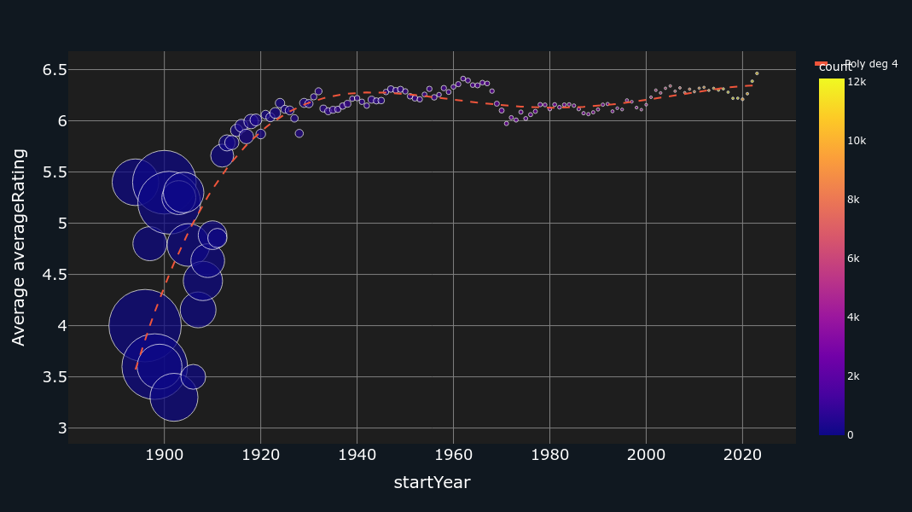

This project enlights the evolution over the years of movie and series making. The adaptation of the way of production as well as our way of consumption are analyzed.
The IMDb Non-Commercial Datasets have been used to perform this study, the open source can be found below.
Creation of a user-friendly Dash interface for the IMDb dataframe analysis.
Total movie production over the years by genre.
The mean average movie rating over the years is depicted in this analysis. The color bar indicates the number of movies, while the scatter size reflects the error associated to amount of votes. Polynomial fits have been applied with an order of 4 (MSE = 0.11).